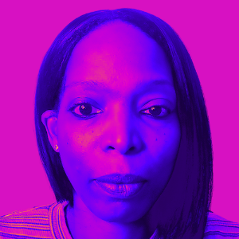

Professionally, I left Corporate America over 10 years ago and I have enjoyed every single second of my freedom. I wouldn't change it for all the riches in the world. Personally, since leaving corporate, I have written and published 4 books, 3 of my own, and one I ghost wrote for a celebrity. In addition to my love of writing, I also started a catering company that I had to shut down following a tragic accident. The accident completely turned my world upside down and it took me a few years to recover. What I've learned about tragedy is that its place in this world is not to break us but to teach lessons. You accept the lesson, pick up the pieces, and forge on in your quest for happiness and peace.
Prior to Covid-19, I launched my spice line, Peggy Gene's Gourmet Spice Blends while working as a restaurant consultant. As we all know the restaurant industry was one of the hardest hit by the pandemic so that sent me in a different direction. Since Covid, I have become certified in Digital Marketing, working freelance in both the non-profit and private sectors. In my love of learning and exploring all my natural gifts and talents, I became a certified Usui Reiki Master and I am also currently pursuing a certification in Professional Life Coaching.

